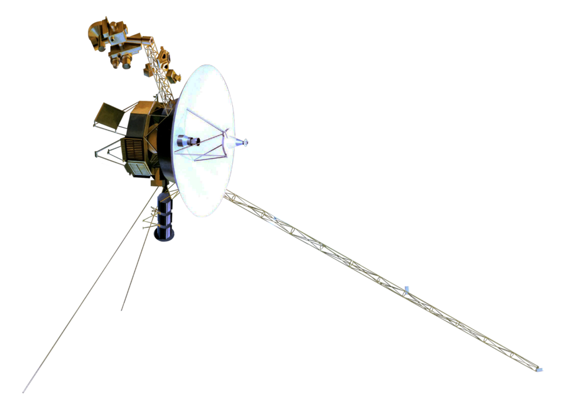
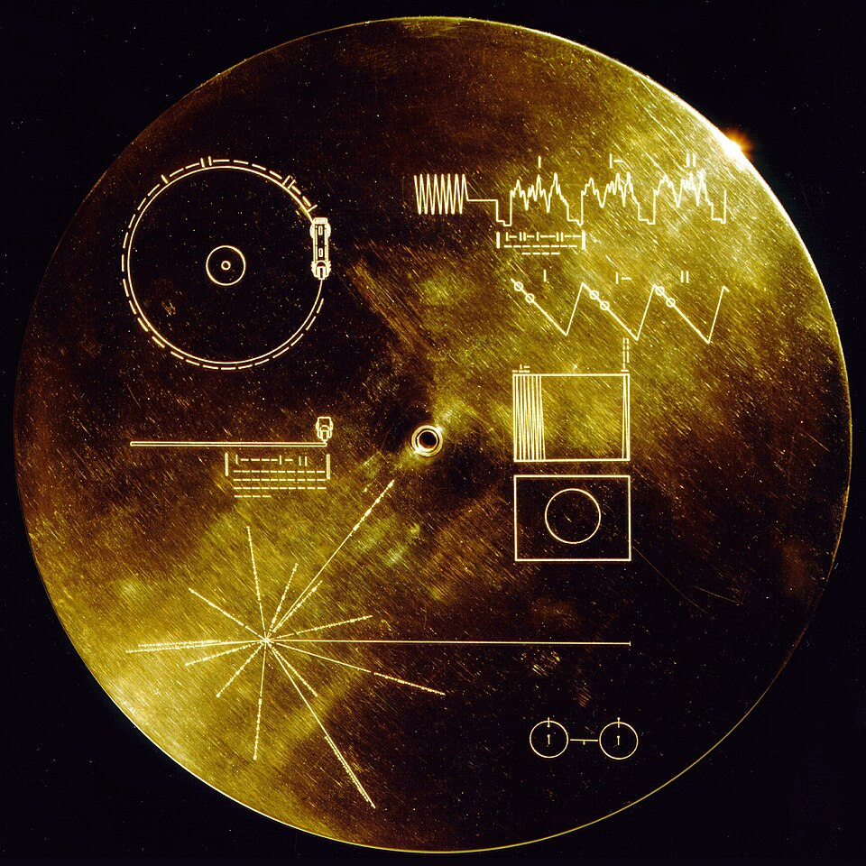
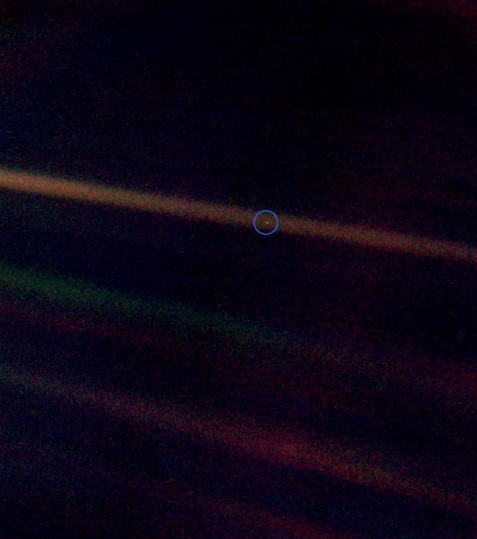

八颗行星此刻的位置，和五艘已经或正在飞出外太阳系的飞船，都在同一张图上。指针移到天体上读它的数字，拖动下面的时间轴看它们五十多年里怎样各走各路；在轨迹上停一下，能读出那一刻的日期。切到「立体」，整个太阳系会跟着转起来，也能推着它转。

两艘探测器分别远行，每艘发射时的质量约为 815 kg，天线是一口 3.7 m 的白色大锅。金唱片挂在侧面，仪器伸在杆子末端。它们飞得比任何人造物都远，也比任何一台人造物都孤单。
图为 NASA 收藏的探测器工程模型（比例模型），非在飞实物照片。

一张 12 英寸镀金铜盘，115 幅图，55 种语言的问候，90 分钟音乐：从巴赫、贝多芬到查克·贝里，还有中国的《流水》。它是给「可能永远不会有人」的一封信，封面上刻着播放速度与同位素时钟。

再看看那个点，它就在这里。那是家园，那是我们。
你所爱的每一个人，你认识的每一个人，听说过的每一个人，曾经有过的每一个人，都在它上面度过他们的一生。
Look again at that dot. That's here. That's home. That's us.